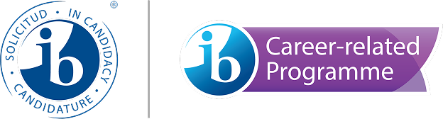

في دار المعرفة، نجمع بين مبادئ برنامج البكالوريا الدولية للسنوات الابتدائية مع نهجنا الفريد في التعليم الثنائي اللغة. يتم تقديم الأطفال لكل من العربية والإنجليزية منذ السنوات الأولى، مما يعزز الفهم الثقافي ومهارات التواصل. يضمن منهجنا القائم على الاستفسار أن يتم تشجيع كل طفل على الاستكشاف والإبداع والازدهار في بيئة داعمة وشاملة.
IB السنوات المبكرة
الأكاديميات

مقدمة البرنامج
سنوات البكالوريا الدولية المبكرة
بداية مشجعة لإلهام الفضول والإبداع والثقة في المتعلمين الصغار. مرحلة تأسيسية تمزج بين اللعب والاستفسار والاستكشاف لبناء المهارات الأساسية وحب التعلم.
الأهمية
للعب
التعلم من خلال الاستكشاف والخيال والاكتشاف المبهج. اللعب هو جوهر فلسفة تعليمنا. من خلال اللعب الهادف، يطور الأطفال المهارات المعرفية والاجتماعية والعاطفية الأساسية. سواء كان ذلك في البناء أو الإبداع أو تمثيل الأدوار، تم تصميم كل نشاط لتعزيز قدرات حل المشكلات، وإشعال الخيال، وبناء تجارب تعليمية إيجابية تدوم مدى الحياة.

فصولنا الدراسية مصممة بعناية لتحفيز العقول الشابة وتوفير توازن بين الهيكل والحرية. تشجع مراكز التعلم على الاستكشاف العملي، بينما تساعد المساحات التعاونية الأطفال على تطوير المهارات الاجتماعية والعمل الجماعي. كل عنصر من عناصر البيئة مصمم لتعزيز الاستفسار والاستقلال والاكتشاف المبهج.
مساحة تعليمية
مصممة للنمو
بيئات ملهمة تدعم الإبداع
مساحات متعددة الحواس ومركزية حول الطفل
التعلم القائم على الاستفسار في العمل
نهجنا في
دار المعرفة
تمكين الطلاب من خلال التعلم الثنائي اللغة والتعليم القائم على الاستفسار

المتعلمين
الصغار
تنمية الفضول والاستقلال وحب الاكتشاف من البداية. في سنوات البكالوريا الدولية للسنوات المبكرة، الأطفال ليسوا مجرد متعلمين - إنهم مستفسرون ومفكرون ومتواصلون. تركيزنا هو مساعدتهم على تطوير المواقف والسمات التي ستحدد مسارات تعلمهم المستقبلية. مع توجيه من معلمين مهرة، يبنون الثقة للتعبير عن الأفكار، وطرح الأسئلة، وتطوير حب عميق للتعلم يمتد إلى ما بعد الفصل الدراسي.